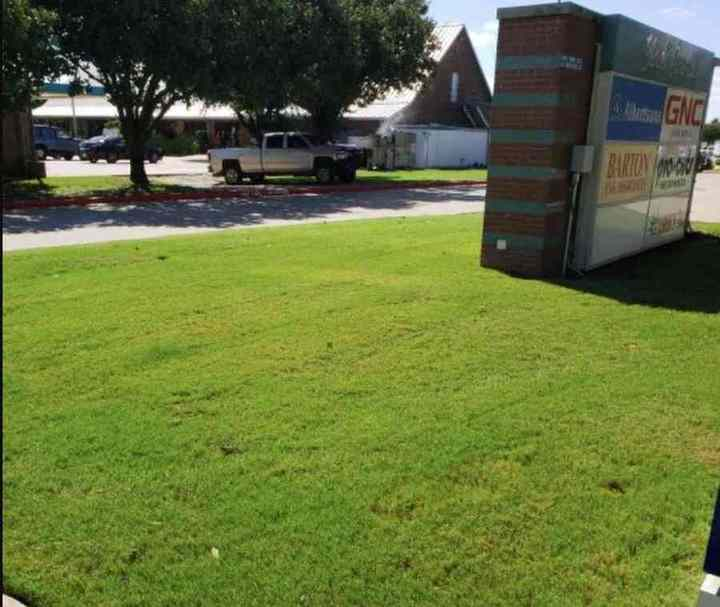

Properties
Commercial landscape management
Grounds programs for property managers, healthcare facilities, building owners, developers, and homeowners associations.
Request a quote
Texas Landscape Services works directly with the people who own or manage a property, then builds a maintenance program around that site rather than a one-size route.
The public service list covers layout, irrigation, planting, plant selection, and ongoing grounds management. The aim they state is a consistent exterior that suits tenants and protects the owner’s investment.
Healthcare facilities are called out as their own service on the company’s listing, alongside general commercial maintenance.
Other services
Next step
Tell us about the property.
A call or a short note is enough to start.